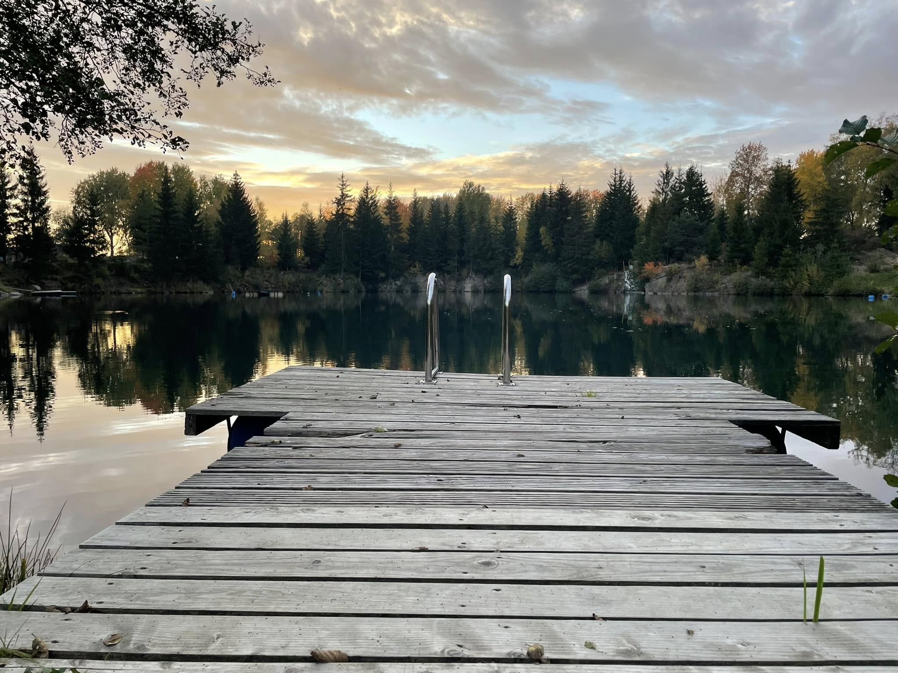
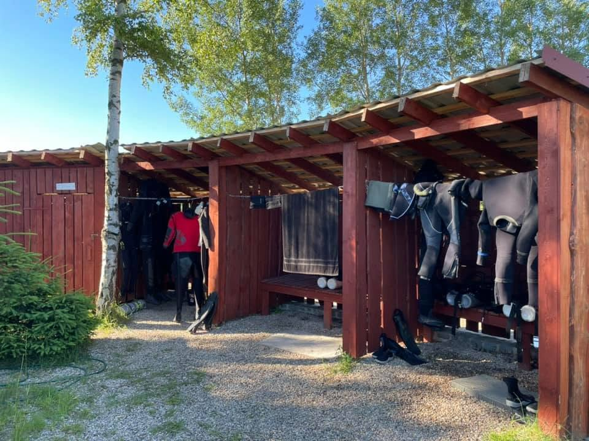
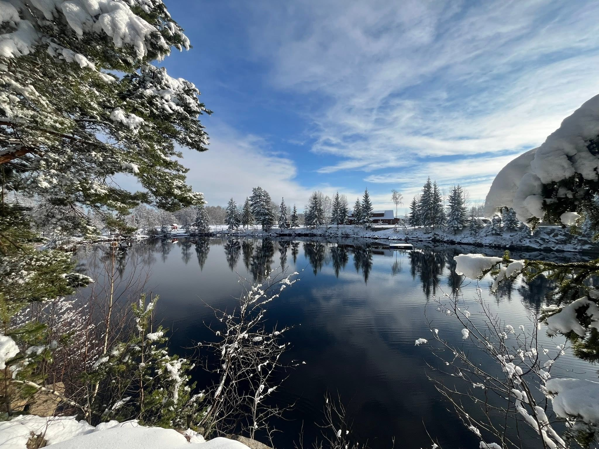
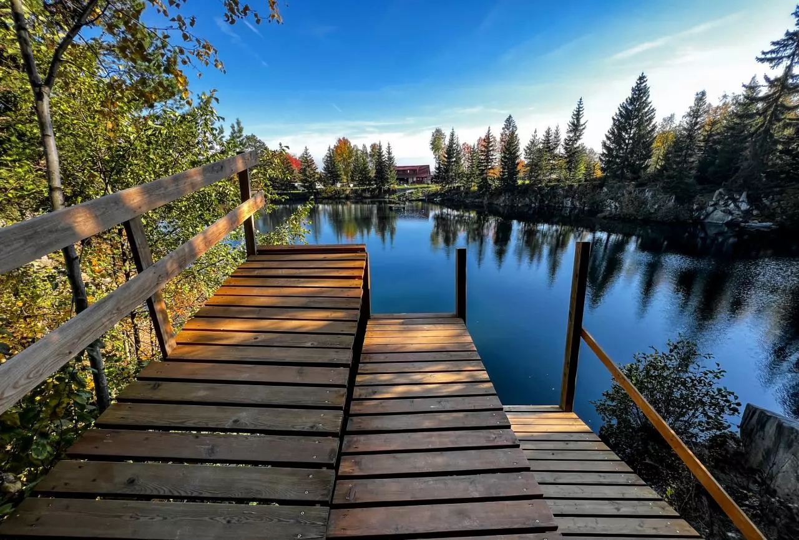
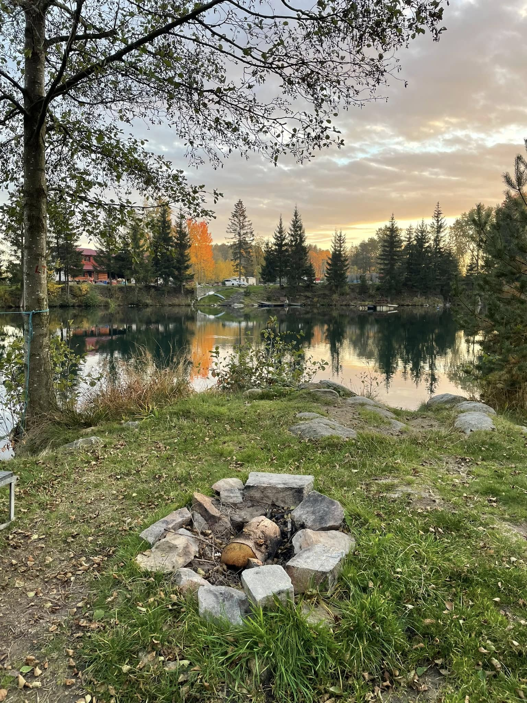
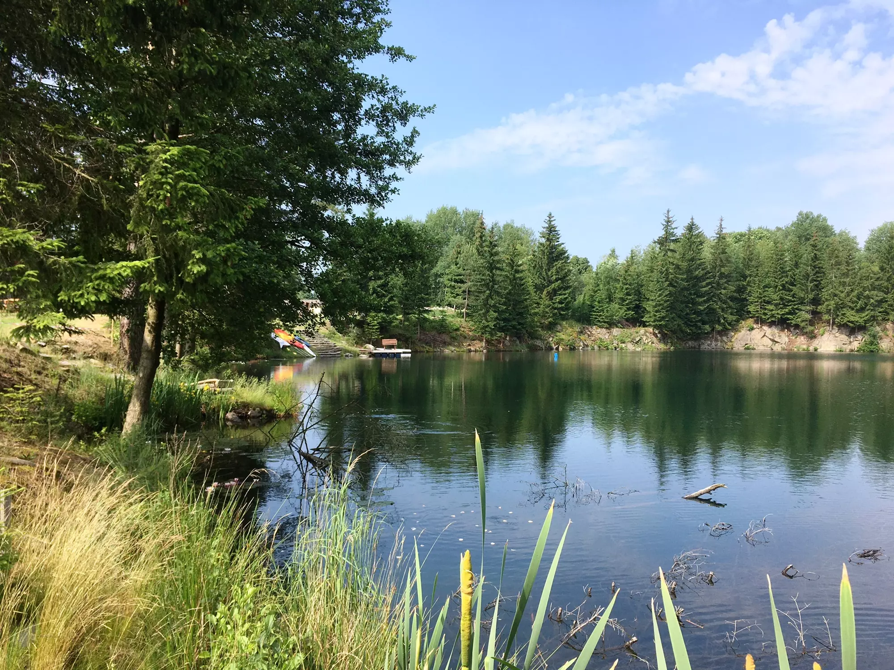
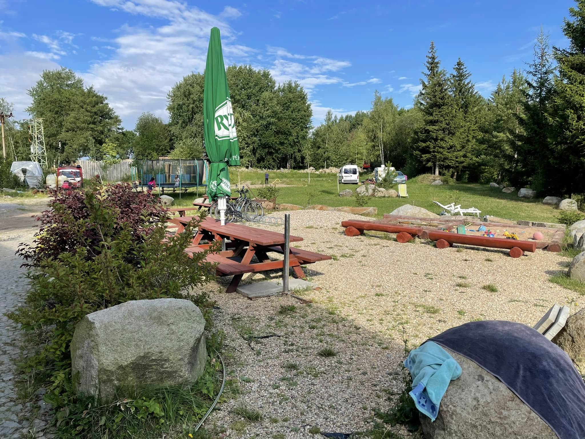
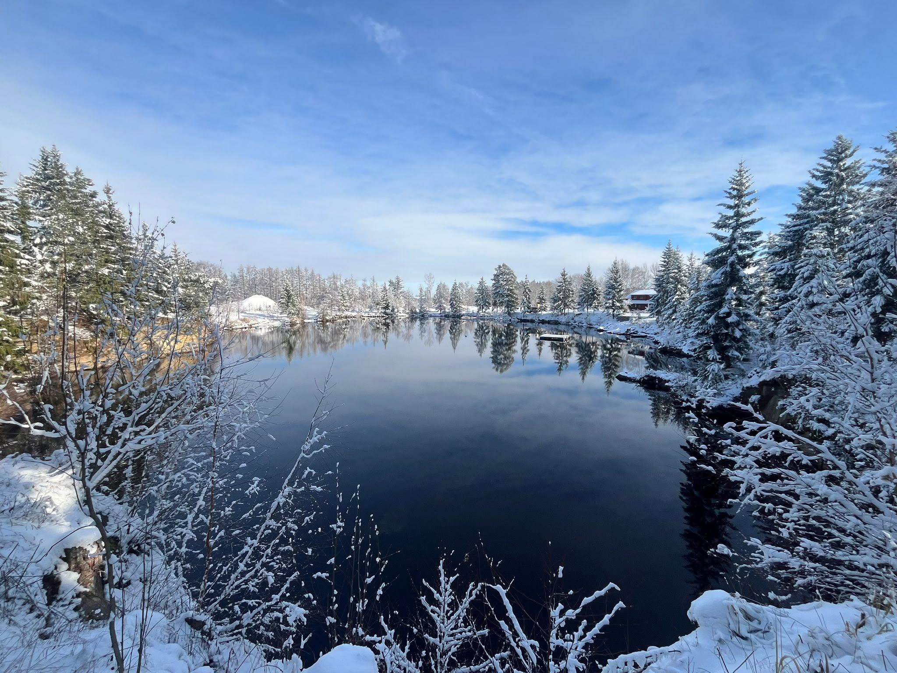
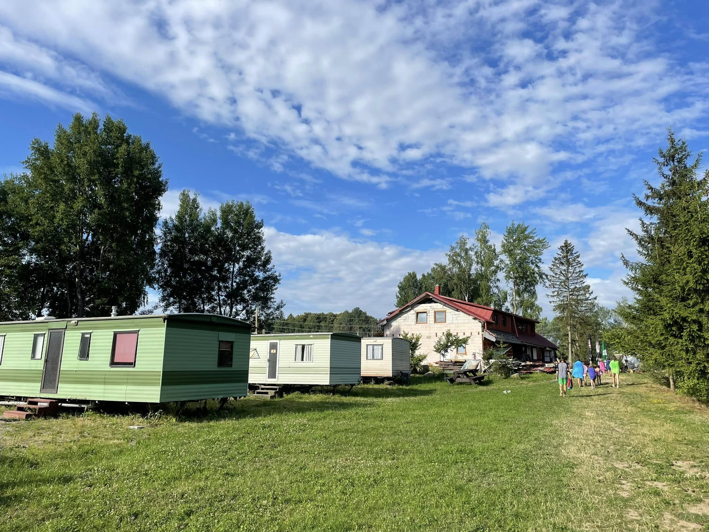
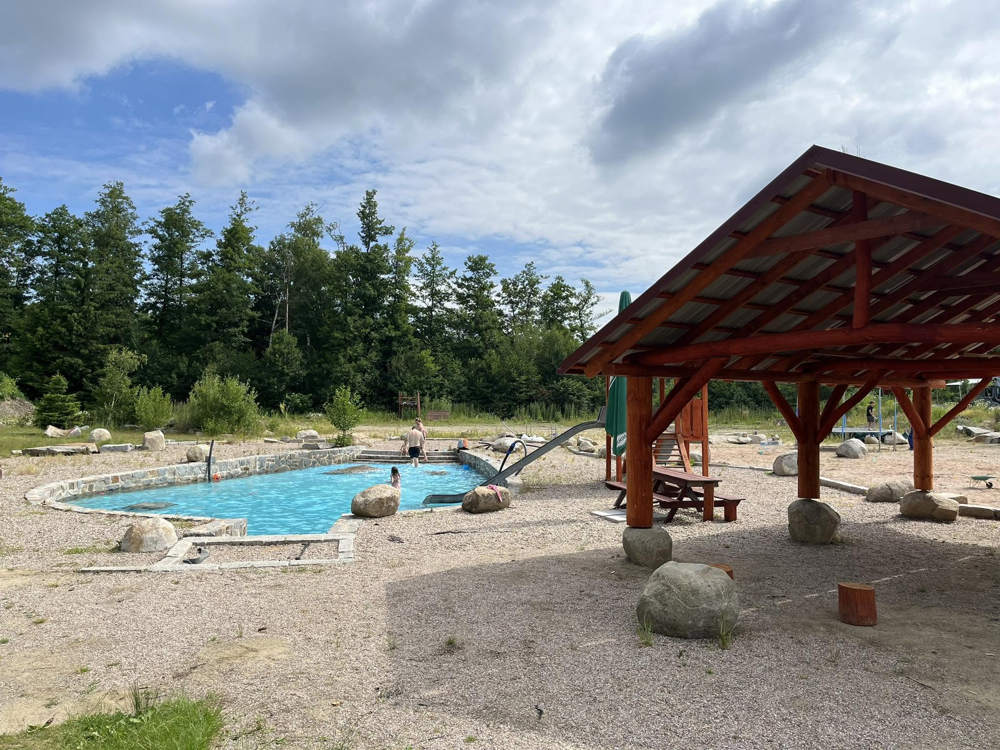

Rekreační zóna
Severní a východní strana lomu slouží širší veřejnosti: koupání, slunění a odpočinek u čisté vody.
Zatopený žulový lom s křišťálově čistou vodou. Tři zóny pro koupání, kemp i ponory. A na dně? Vrak letadla, který čeká právě na tebe.
Voda pro rodiny
Přírodní areál Srní tvoří bývalý, nyní zatopený lom a přilehlé pozemky mezi obcemi Hlinsko v Čechách a Srní. V době první republiky a po válce se zde těžila kvalitní světlozrnná hlinecká žula; těžba byla ukončena v 60. letech 20. století.
Poté došlo k postupnému zaplavení těžební jámy spodní vodou a k obnovení přírodního charakteru lokality. Mezi místními je lom někdy přezdíván „Kovošrot“. Firma tu působila až do konce 90. let a pozůstatky po její činnosti dodnes najdete na dně lomu.
Dnes v areálu vznikly tři zóny: potápěčská, kempovací a rekreační, a o jeho zvelebování se průběžně staráme.
Těžba kvalitní hlinecké žuly, následně ukončena a jáma se zaplavuje spodní vodou.
V prostoru nad lomem působí Kovošrot, pozůstatky jsou dodnes na dně.
Správu přebírá Ing. Pavel Šenk (Top Dive) a s místními potápěči obnovuje zvelebování.
Pročištění okolí od náletových dřevin, zarybnění s důrazem na biodiverzitu, zpevnění příjezdové cesty.
Ing. Pavel Šenk se stává majitelem lomu a okolních pozemků.
Likvidace hald odpadního kamene, zavezení zeminou, zatravnění a opětovné osázení dřevinami.
Tři funkční zóny, zpevněná parkoviště a zázemí pro návštěvníky i potápěče.
Areál je rozdělen tak, aby si k vodě našel cestu každý, od rodiny s dětmi po zkušeného potápěče.
Severní a východní strana lomu slouží širší veřejnosti: koupání, slunění a odpočinek u čisté vody.
Dvě kempovací plochy a budova s občerstvením, toaletami, půjčovnou výstroje a kompresorovnou.
Srdce lomu pro ponory: čistá voda, podvodní atrakce a zázemí provozované od počátku potápěči.
Dvě hlavní cesty k vodě: bezstarostná rekreace na hladině a dobrodružství pod ní.

Rekreace a koupáníPřírodní koupaliště s čistou vodou v klidu lesa. Žádné chlorové bazény, jen lom, slunce a prostor k odpočinku.

PotápěníLom provozovaný potápěči pro potápěče. Zázemí, půjčovna výstroje, kompresorovna a podvodní atrakce, na kterých se stále pracuje.
Vstupné se liší podle sezóny. Na kempování neprovádíme rezervace, můžete přijet kdykoli bez nich.
Dobré vědět: Od roku 2025 platí ubytovaní místní ubytovací poplatek obci Hlinsko ve výši 20 Kč. Uvedené ceny jsou orientační podle sezóny 2026, aktuální sazby ověřte na místě.
Lom se neustále rozvíjí. V roce 2026 přibývají nové podvodní atrakce a vylepšené molo.
Potopený letecký vrak jako nová dominanta ponorů pro pokročilé i fotografy.
Další objekt pro průzkum ve vodě, atrakce která láká k opakovaným ponorům.
Bezpečnější a pohodlnější vstupy do vody a nové molo pro snadný start ponoru.
Sezóna 2026 přináší řadu vylepšení pro pohodlí návštěvníků i potápěčů. Pracujeme na tom, aby byl areál rok od roku lepší.
Náhled atmosféry areálu. Galerie se naplní reálnými fotkami lomu, kempu a ponorů.








Přírodní areál Srní leží mezi obcí Srní a Hlinskem v Čechách. Na kempování není potřeba rezervace.
Vrak starého letadla i další atrakce odpočívají v hlubině. Odměna pro každého, kdo se potopí až úplně dolů.